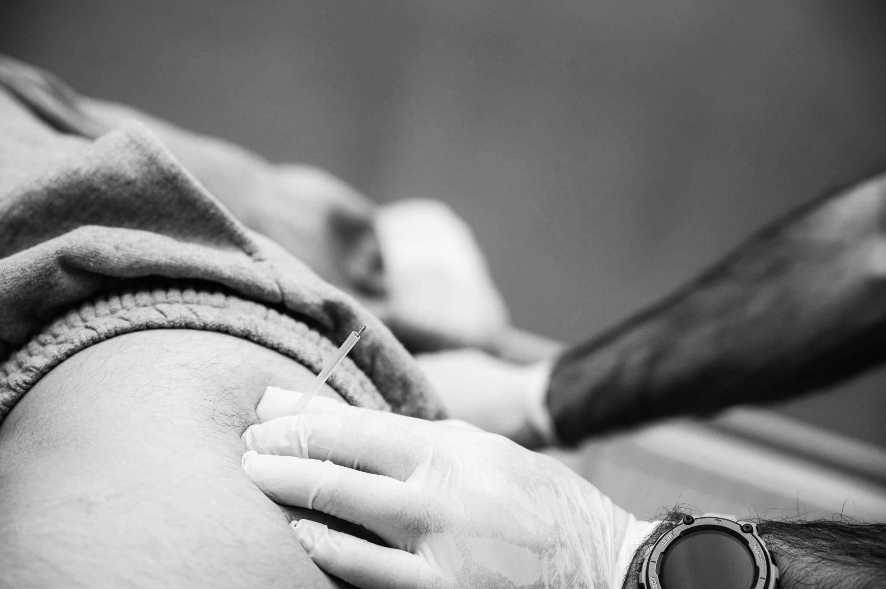
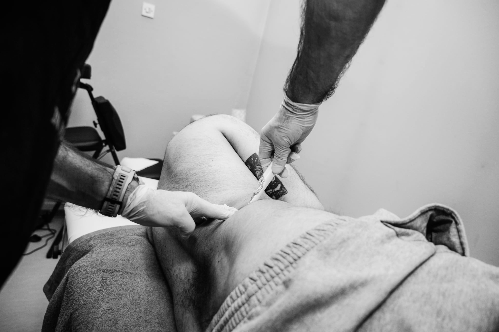

Dry needling
Dry needling je terapijska tehnika za tretman bolnih i napetih trigger tačaka u mišićima. Ove tačke uzrokuju lokalni bol, širenje bola u druge dijelove tijela, ukočenost i smanjenu pokretljivost. Cilj terapije je opuštanje mišića, smanjenje bola i vraćanje bolje funkcije pokreta.

FSN needling
FSN needling koristi tanku iglu postavljenu u potkožno tkivo s ciljem smanjenja bola i opuštanja napetih mišića. Za razliku od klasičnih tehnika, igla djeluje u površinskom sloju ispod kože, čime se postiže nježan ali efikasan terapijski učinak. Koristi se za smanjenje mišićne napetosti i povećanje pokretljivosti.

Bobath terapija
Bobath terapija usmjerena je na ponovno učenje pravilnih obrazaca pokreta kod pacijenata s neurološkim oštećenjima. Kroz vođene pokrete, pozicioniranje i manualni rad pomaže u poboljšanju kontrole tijela, ravnoteže i svakodnevne funkcionalnosti.
PNF koncept
PNF koncept pomaže poboljšanju snage, koordinacije, pokretljivosti i kontrole pokreta kroz specifične obrasce kretanja. Koristi signale iz mišića i zglobova kako bi pomogao mozgu da efikasnije organizuje pokret. Posebno korisna u neurološkoj i ortopedskoj rehabilitaciji.

Kinesio taping
Kinesio taping je metoda podrške mišića i zglobova pomoću elastičnih traka koje se lijepe na kožu i oponašaju svojstva kože. Trake smanjuju bol, poboljšavaju cirkulaciju krvi i limfe te pružaju podršku mišićima bez ograničavanja prirodnog raspona pokreta.
Mobilizacija živaca
Mobilizacija živaca je tehnika fizioterapije koja poboljšava pokretljivost i funkciju nervnih tkiva. Koristi se kod neuralgija, radikulopatija i stanja gdje živci nisu slobodni u svom prirodnom kretanju kroz okolna tkiva, uzrokujući bol, trnce ili slabost.
Miofascijalna terapija
Miofascijalna terapija usmjerena je na tretman fascialnog sistema koji obuhvata cijelo tijelo. Kroz specifičan manuelni rad otpuštamo napetosti u mišićima i fascijama, čime se smanjuje bol, poboljšava pokretljivost i uspostavlja bolja funkcionalna ravnoteža tijela.